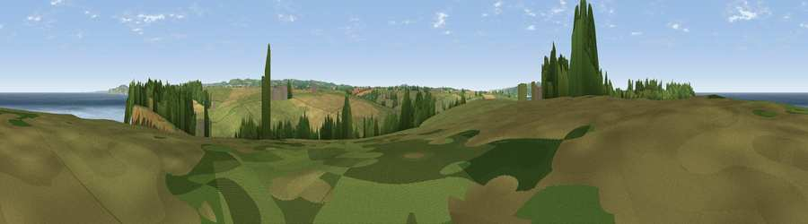

Viewpoint near Connor Downs
#7620 in England · top 17% of its area beats it · near Connor DownsWhere it is
The exact computed spot (SW 60150 42812). Click the marker for map links.
The view, rendered

A 360° render of this exact spot computed from the terrain model, tree cover and land cover — summer colours, afternoon light, calibrated against photographs of famous viewpoints. Real trees, hedges and buildings will differ in detail.
The panorama
Grey silhouette: terrain skyline in each direction (720 bearings, Earth curvature and refraction included). Dashed green: skyline with trees (+15 m) and buildings (+8 m) as obstacles. Blue strip: how far the ground is visible on each bearing.
Where the view opens
Wedge length = distance to the farthest visible ground on that bearing (vegetation-aware). Rings at 10, 25 and 50 km.
What fills the view
55% water · 26% grassland · 11% woodland · 7% cropland ·
Angular shares of the visible panorama (visual magnitude), not map area. Landscape diversity 0.50 (0–1 Shannon).
Key numbers
More beautiful places nearby
The staircase of upgrades: each row has a higher view potential than everything closer. Driving times are estimates from straight-line distance, calibrated against real road routing — check an actual route before setting out.
| Place | Direction | Drive | Score |
|---|---|---|---|
| Viewpoint near Connor Downs | WSW · 1 km | ~4 min | 67.2 |
| Viewpoint near Portreath | ENE · 3 km | ~6 min | 67.7 |
| Viewpoint near Brea | ESE · 7 km | ~14 min | 74.1 |
| Viewpoint near Illogan Highway | ESE · 8 km | ~16 min | 75.8 |
| Carn Brea | ESE · 8 km | ~17 min | 81.1 |
| Viewpoint near Halsetown | WSW · 11 km | ~21 min | 82.0 |
| Viewpoint near Towednack | WSW · 12 km | ~22 min | 84.2 |
| Rosewall Hill | WSW · 12 km | ~22 min | 88.0 |
50.23654, -5.36486 · source: screening · position refined by local search. Computed location — check access rights before visiting.